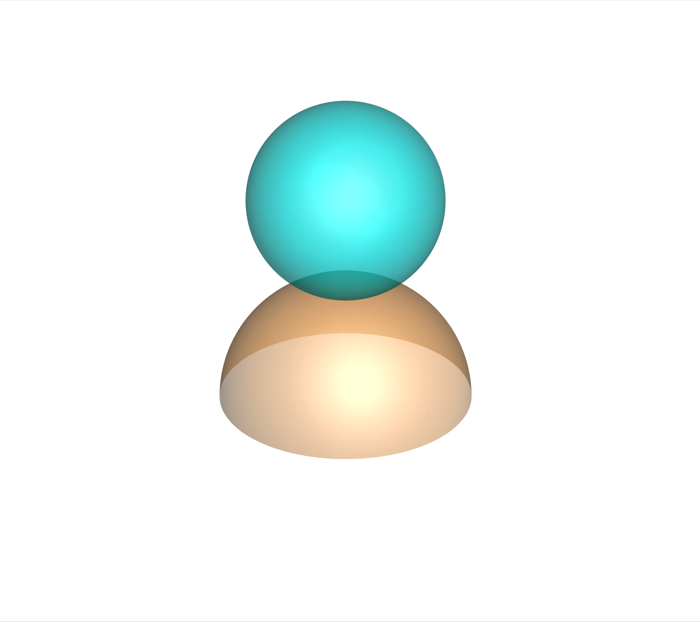
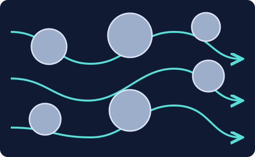
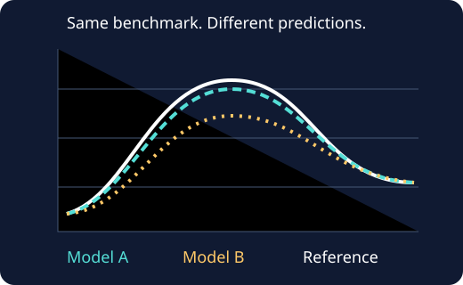
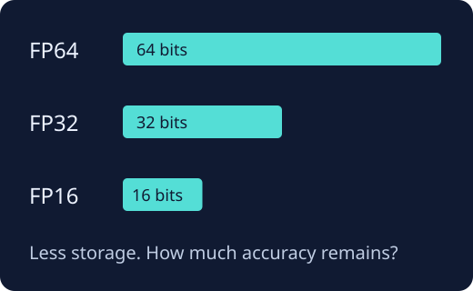
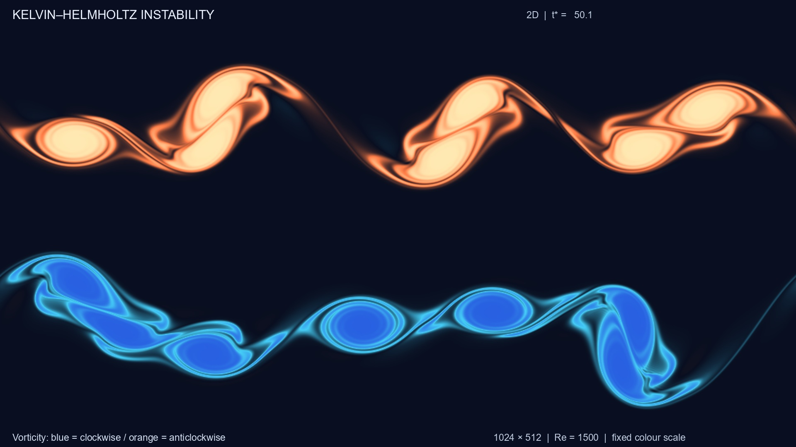

What could you
investigate?
Follow a drop. Explore a pore. Find out where a computation loses its accuracy.
No prior LBM experience is required. A master’s project begins with a focused question and a manageable test case. You can build the theory and computing skills as the project develops.
Browse specific research project ideas →
Explore focused questions within each research direction.
Explore the simulation gallery →
Images and animations of droplets, a vibrating fibre, and complex wakes.
Droplets, bubbles and interfacesHow does a fluid interface move, deform and change?
Two-liquid droplet impact
A starting point grounded in experience
A rising bubble or a deforming drop brings together fluid motion, surface tension and the interaction between phases. Small changes in physical parameters can produce very different dynamics.
A possible master’s project
Reproduce a benchmark such as a rising bubble or a deforming droplet. Check conservation and grid convergence, then investigate how a selected physical parameter or numerical model affects the results.
What you would learn
Interfacial fluid mechanics, multiphase LBM, verification, and how to distinguish a physical effect from a numerical artefact.
A focused first step: one benchmark, one well-defined question, and a resolution your hardware can support. More demanding interface dynamics can follow if the initial study supports them.
Flow through porous materialsHow does the space between solid grains shape the flow?
Flow paths through pores · schematic
A direction we would like to explore
In rocks, filters and other porous materials, fluid follows a network of narrow passages. Their geometry controls how easily fluid moves and, when two phases are present, where one phase may become trapped.
A possible master’s project
Start with single-phase flow through a synthetic porous geometry. Measure permeability and investigate the effects of pore structure, grid resolution or wall treatment. A multiphase extension could follow once the basic model is verified.
What you would learn
Pore-scale transport, geometry representation, boundary conditions, and systematic numerical experiments.
Keep the geometry manageable: begin with a small, controlled sample before considering large three-dimensional structures.
Which model should we trust?Compare methods on equal terms—and understand why they differ.
Compare predictions · schematic
Methodology and verification
Two models can produce similar pictures but differ in conservation, accuracy, stability and cost. A useful comparison explains those differences and identifies the conditions under which each method is a good choice.
A possible master’s project
Choose a small set of collision operators, interface models or boundary treatments. Compare them on the same benchmarks, with consistent physical conditions and clearly reported computational costs.
What you would learn
Error analysis, grid convergence, benchmark design, reproducible experiments, and how model assumptions influence results.
A good comparison has a question: for example, which treatment gives the lowest error for a fixed memory or runtime budget? The aim is an explanation, rather than a universal ranking.
More physics per byteHow much precision does a reliable simulation actually need?
Floating-point storage per number
Computing and numerical precision
Computers store numbers with finite precision. Small updates can lose significant digits or disappear when combined with larger values. Lower precision can reduce memory use and improve speed on suitable hardware—but the resulting errors need to be understood.
A possible master’s project
Use a verified FP64 implementation as a reference, then study FP32, FP16 or mixed precision on selected benchmarks. Test whether reformulating stored quantities, changing arithmetic operations, or keeping sensitive calculations in higher precision can mitigate round-off error.
What you would learn
Floating-point arithmetic, numerical conditioning, solver implementation, profiling, and the trade-offs between accuracy, memory and speed.
Precision is part of the experiment: FP64 is a reference to check, not an exact answer. The useful comparison depends on the flow, grid, runtime and hardware. Native FP16 performance varies by device.
Unsteady flows and turbulenceWhen does an orderly flow become more complex?
Kelvin–Helmholtz instability
A more demanding direction
Wakes can change from steady flow to periodic vortex shedding and, under suitable conditions, more complex three-dimensional motion. Studying these transitions requires careful control of resolution, boundaries and numerical errors.
A possible master’s project
Begin with a verified unsteady-flow benchmark, such as vortex shedding behind an obstacle. Investigate onset, frequency or sensitivity to the numerical method. Consider a turbulence-focused extension only after assessing preparation and computing requirements.
What you would learn
Unsteady fluid mechanics, time-series analysis, spatial and temporal convergence, and how to assess whether a simulation resolves the relevant flow scales.
Scope matters here: a high Reynolds number or a complicated-looking flow does not by itself establish that turbulence is resolved. Turbulence projects require a particularly careful feasibility discussion.
Computing resources
Students are expected to provide their own computing hardware. We will agree on a project scope that fits the available memory and computing capability.
Requirements depend on the problem, resolution, dimensionality and implementation. Please discuss your current setup before choosing a project or buying equipment. A smaller, well-verified simulation can make a stronger thesis than a larger one whose errors are unclear.
You do not need a finished proposal.
Start with a direction that interests you, a little about your physics and programming background, and the hardware you have access to. We can use those as the starting point for a focused project discussion.
These are possible directions. A specific thesis question and its feasibility are agreed through discussion.